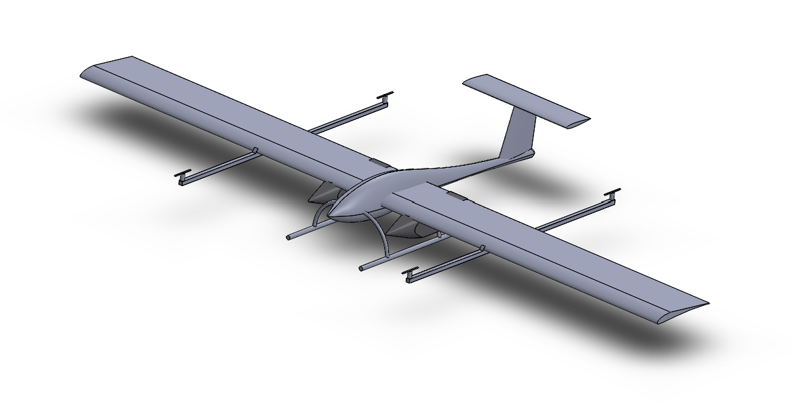
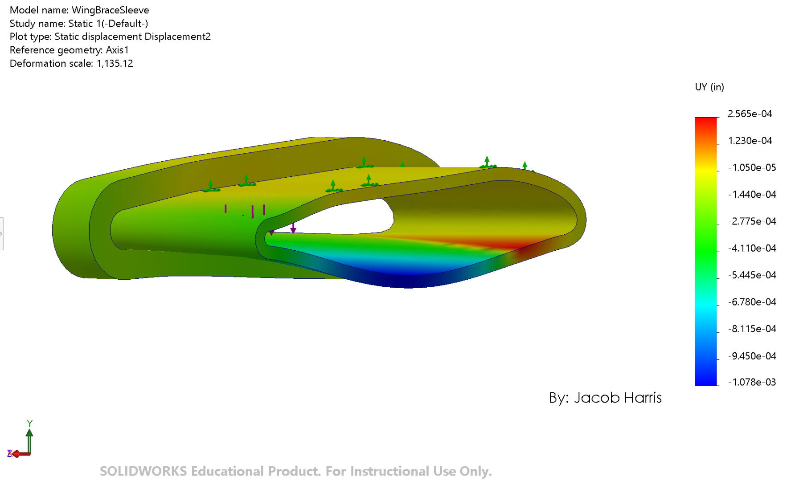
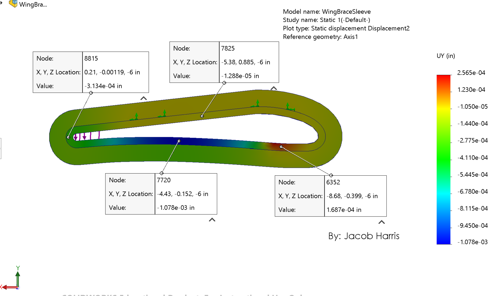
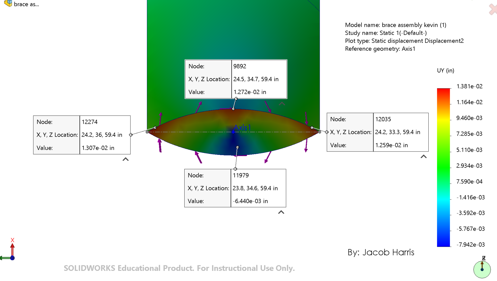

AEROSPACE ENGINEERING / PROJECT
BANSHEE UAV
Structural load cases & brace rotational stiffness


BANSHEE · Sinch aircraft CADOverview & objectives
I am the Assistant Design & Structures Lead for the Battery as iNtegrated Structure High Endurance Experimental (BANSHEE) UAV, beginning in August 2026. I've evaluated wing supports, horizontal-tail joints, and landing-gear joints under modeled flight and landing loads.
My responsibilities & contributions
I wrote the MATLAB load-analysis calculations and used FEMAP to identify critical load locations in the wing and horizontal tail. I've resized the landing-gear diameter to resolve negative safety margins and achieve a calculated factor of safety of 1.5 under 2G landing loads. I've also led a SOLIDWORKS workshop covering CAD fundamentals, structural mechanics, and stress analysis.
Aircraft design & specifications
I've model carbon-fiber wing rods, epoxy connections, and 3D-printed joints. I have used simple but accurate component idealizations to assess structural behavior within the aircraft configuration shown above.
My engineering methods & analysis
I've resolved reaction forces and evaluated shear, bending stresses, and tension/compression margins of safety in MATLAB for 1G and 2G static cases and a 2G landing case. I have also simulated wing-induced torsion to compare the rotational stiffness of the sleeve and saddle braces.
CAD models & technical imagery
I've used the Sinch aircraft CAD view above and the sleeve and saddle-brace displacement plots below to show the configuration and my rotational-stiffness study. Select an image to inspect it at full size.
My results & next steps
My simulations gave an average rotational stiffness of approximately 107.6 kip-in/rad for the sleeve brace and 0.417 kip-in/rad for the saddle brace. Under the assumed FEA conditions, I found the sleeve approximately 258 times as stiff. Based on that comparison, I recommended the sleeve brace with an internal clasp mechanism to secure the wing.
My load-analysis tables report positive margins for the listed modeled cases and material allowables. We have not conducted BANSHEE testing yet. These stiffness and safety-factor results are analytical predictions, not measured test results.





